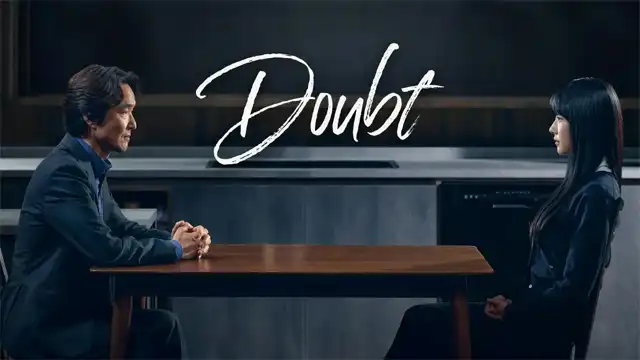

درام هیجانی پزشکی جنایی سریال چاقوی تیز (Hyper Knife) "چوی دئوک هویی" بهترین جراح مغز و اعصاب دنیاست. در گذشته، او شاگردی به نام "جونگ سه اوک" داشت. او پزشکی با استعداد و آیندهدار بود، اما "دئوک هویی" احساسات متناقضی نسبت به او داشت. سپس، در جریان یک عمل جراحی، او را برای همیشه از اتاق عملش اخراج کرد. با اینکه "سه اوک" زمانی به عنوان یک دکتر نابغه شناخته میشد، حالا به عنوان یک پزشک زیرزمینی در یک اتاق عمل غیرقانونی کار میکنه. سپیده رضایی زمان مطالعه: 5 دقیقه
درام اکشن هیجانی سریال ناقصها (The Defects) کیم سه هی، پزشک مشهور و مدیر بیمارستان، در پشت پرده رهبری یک شبکه فرزندخواندگی غیرقانونی را بر عهده دارد. او بهشدت باور دارد که فقط ژنهای برتر باید بقا پیدا کنند و کودکانی که مطابق انتظارات والدین نباشد را میکشد. کیم آ هیون، یکی از کودکانی که از مرگ نجات یافته، حالا علیه او برای انتقام و عدالت مبارزه میکند. سپیده رضایی زمان مطالعه: 5 دقیقه
عاشقانه کمدی اکشن هیجانی سریال دبیرستان مخفی (Undercover High School) "جونگ هه سونگ" یک مأمور زبده سازمان اطلاعات ملی کره است که بعد از یک حادثه بزرگ در یکی از مأموریتهایش تنزل درجه پیدا میکند. او مأمور میشود تا برای پیدا کردن شمشهای گمشده طلای پادشاه گوجونگ، به عنوان یک دانشآموز در دبیرستان معتبر بیونگمون نفوذ کند. در این مأموریت با معلم سرخانهاش "او سو آ" آشنا میشود که یک معلم قراردادی تاریخ کره با شخصیتی درستکار و عاشق دانشآموزانش است. سپیده رضایی زمان مطالعه: 5 دقیقه
عاشقانه ملودرام زندگی سریال فیلم ما (Our Movie) داستان این سریال راجع به یه کارگردان فیلم به اسم لی جه ها (نام گونگ مین) هست که برای پیدا کردن پروژه بعدیش به مشکل خورده و بعد از اولین فیلم موفقش که جوایز زیادی دریافت کرده، دچار بحران و رکود شده. این کارگردان قصد داره یه فیلم عاشقانه بسازه که در اون یکی از شخصیت ها به علت بیماری غیر قابل درمانش، عمر زیادی براش نمونده. در مسیر پیدا کردن بازیگر، لی جه ها با لی دا اوم (جون یو بین) رو به رو میشه. سپیده رضایی زمان مطالعه: 5 دقیقه
عاشقانه زندگی سریال سئول نانوشته ما (Our Unwritten Seoul) یو می جی (پارک بو یونگ) و یو می ره (پارک بو یونگ) خواهران دوقلوی همسان هستن ولی همه چیزشون جز ظاهرشون باهم تفاوت داره. خواهر کوچیکتر، یو می جی، دوران اوج کوتاه خودش رو به عنوان یه ورزشکار دو میدانی امیدبخش به پایان رسونده و الان یه زندگی آزادانه داره. خواهر بزرگ تر، یو می ره، زنی کمال گراست. از دوران مدرسه نخبه به حساب میومده و در حال حاضر توی یه شرکت دولتی مشغول به کاره. سپیده رضایی زمان مطالعه: 5 دقیقه
جوانان کمدی پزشکی زندگی سریال دفترچه راهنمای رزیدنت (Resident Playbook) این سریال داستان چهار رزیدنت سال اول در بخش زنان و زایمان را روایت میکند که در بیمارستان Yulje کار میکنند و به زندگی بیمارستانی و دوستیهای آنها میپردازد. سپیده رضایی زمان مطالعه: 5 دقیقه
سیاسی معمایی جنایی هیجانی سریال قلبهای مدفون (Buried Hearts) برای زنده موندن، مردی به صندوق سیاه سیاسی به ارزش ۲ تریلیون وون هک میزنه. از اون طرف، یه مرد قدرتمند که تو سایهها زندگی میکنه، بدون اینکه بدونه هک شده، با کشتن یه نفر ۲ تریلیون وون رو از دست میده. "سئو دونگ جو" به عنوان رئیس دفتر رئیس گروه دائهسان کار میکنه و به عنوان «مرد دائهسان» شناخته میشه - کسی که حاضره برای منافع شرکت جونش رو بده. سپیده رضایی زمان مطالعه: 5 دقیقه
درام جوانان اکشن هیجانی سریال کلاس قهرمان ضعیف فصل دوم (Weak Hero Class 2) یون شیاون که هنوز از زخمهای گذشته رنج میبرد، پس از انتقال به مدرسهای جدید با دوستان تازهای آشنا میشود. اما با تهدیدی جدید از سوی گروهی خشن به نام اتحاد روبهرو میشود. حالا او باید برای نجات خود و دوستانش با دشمنی بیرحم بجنگد — نبردی که فقط قویترینها از آن جان سالم به در میبرند. سپیده رضایی زمان مطالعه: 5 دقیقه
 معمایی اکشن هیجانی روانشناسی سریال تردید (Doubt) "جانگ تائه سو" یک نابغه در تحلیل رفتار مجرمان و از پیشگامان این حوزه در کره جنوبی است. او راه را برای تحلیلگران رفتار مجرمان در کشور هموار کرده و احترام و اعتماد مطلق سازمان پلیس را به دست آورده است. در خانه، او پدری مجرد است که دخترش را به تنهایی بزرگ میکند. وقتی "جانگ ته سو" روی یک پرونده قتل کار میکند، متوجه میشود که دخترش در این ماجرا دخیل است. سپیده رضایی زمان مطالعه: 5 دقیقه
عاشقانه فانتزی کمدی ملودرام سریال گابلین (Goblin) “کیم شین” یک گابلین ( جن ) است که از ارواح محافظت میکند و دیگه نمیخواد زندگی جاودانه داشته باشه. فرشته مرگ “لی دونگ” که دچار فراموشی است به او کمک میکند تا به زندگی جاودانه اش پایان دهد. سپیده رضایی زمان مطالعه: 5 دقیقه
معمایی هیجانی روانشناسی علمیتخیلی سریال موش (Mouse) جانگ با روم (Lee Seung-Gi) افسر پلیس تازه کاریست که با صداقت تمام ، جویای عدالت و رسیدن به حقیقت است تا اینکه با یک پرونده قتل زنجیره ای رو به رو میشود که قاتل آن از بیماری روانی سایکوپاتی (جامعه ستیزی) برخورد دار است ، درحالیکه تمام شهر بخاطر این قاتل در ترس و وحشت فرو رفته است ، جانگ با روم ، با این قاتل ترسناک رو به رو میشود. سپیده رضایی زمان مطالعه: 5 دقیقه
معمایی درام هیجانی حقوق سریال دهن لق (Big Mouth) پارک چانگ هو (Lee Jong Suk) یک وکیل ضعیف است که به دلیل پرحرف بودنش بین مردم به دهنلق بودن معروف است. او درگیر یک پرونده قتل می شود و با یک کلاهبردار نابغه به اسم موش بزرگ اشتباه گرفته می شود. همسرش کو می هو (Im Yoon Ah) که یک پرستار است سعی دارد او را از این اتهام تبرئه کند. سپیده رضایی زمان مطالعه: 5 دقیقه